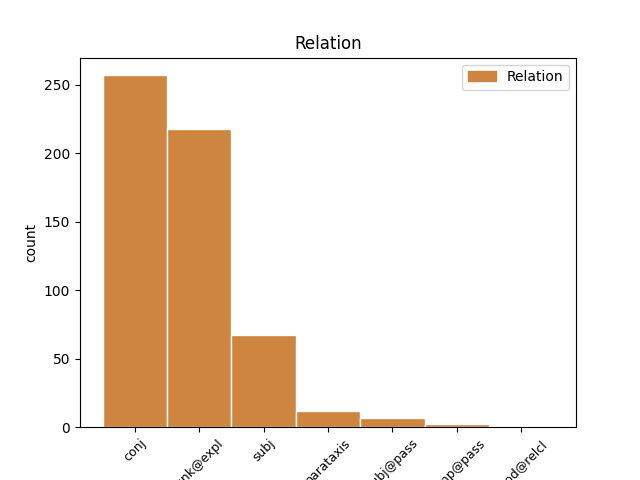
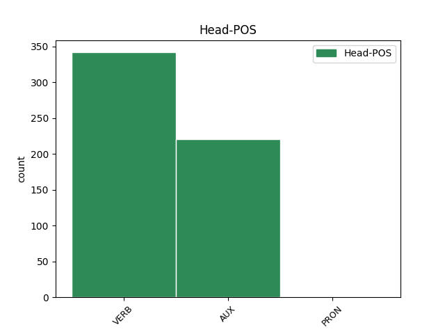
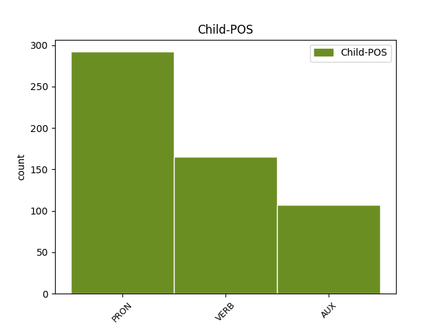

Distribution of features within this leaf



Agreement Rules sorted by frequency.
- When the dependent token is the conjunct(conj) of the head token,
1 Nessun _ _ _ _ 0 _ _ _
2 documento _ _ _ _ 0 _ _ _
3 contemporaneo _ _ _ _ 0 _ _ _
4 descrive _ _ _ _ 0 _ _ _
5 l' _ _ _ _ 0 _ _ _
6 aspetto _ _ _ _ 0 _ _ _
7 fisico _ _ _ _ 0 _ _ _
8 di _ _ _ _ 0 _ _ _
9 Shakespeare _ _ _ _ 0 _ _ _
10 e _ _ _ _ 0 _ _ _
11 non _ _ _ _ 0 _ _ _
12 ci _ _ _ _ 0 _ _ _
13 sono essere VERB V Mood=Ind|Number=Plur|Person=3|Tense=Pres|VerbForm=Fin 0 _ _ _
14 prove _ _ _ _ 0 _ _ _
15 che _ _ _ _ 0 _ _ _
16 lui _ _ _ _ 0 _ _ _
17 abbia _ _ _ _ 0 _ _ _
18 mai _ _ _ _ 0 _ _ _
19 commissionato _ _ _ _ 0 _ _ _
20 un _ _ _ _ 0 _ _ _
21 suo _ _ _ _ 0 _ _ _
22 ritratto _ _ _ _ 0 _ _ _
23 , _ _ _ _ 0 _ _ _
24 così _ _ _ _ 0 _ _ _
25 , _ _ _ _ 0 _ _ _
26 il _ _ _ _ 0 _ _ _
27 ritratto _ _ _ _ 0 _ _ _
28 di _ _ _ _ 0 _ _ _
29 Droeshout _ _ _ _ 0 _ _ _
30 che _ _ _ _ 0 _ _ _
31 Ben _ _ _ _ 0 _ _ _
32 Jonson _ _ _ _ 0 _ _ _
33 considerò _ _ _ _ 0 _ _ _
34 veritiero _ _ _ _ 0 _ _ _
35 , _ _ _ _ 0 _ _ _
36 e _ _ _ _ 0 _ _ _
37 il _ _ _ _ 0 _ _ _
38 suo _ _ _ _ 0 _ _ _
39 monumento _ _ _ _ 0 _ _ _
40 a _ _ _ _ 0 _ _ _
41 Stratford _ _ _ _ 0 _ _ _
42 forniscono fornire VERB V Mood=Ind|Number=Plur|Person=3|Tense=Pres|VerbForm=Fin 13 conj _ _
43 la _ _ _ _ 0 _ _ _
44 migliore _ _ _ _ 0 _ _ _
45 testimonianza _ _ _ _ 0 _ _ _
46 di _ _ _ _ 0 _ _ _
47 il _ _ _ _ 0 _ _ _
48 suo _ _ _ _ 0 _ _ _
49 aspetto _ _ _ _ 0 _ _ _
50 fisico _ _ _ _ 0 _ _ _
51 . _ _ _ _ 0 _ _ _
1 In _ _ _ _ 0 _ _ _
2 gli _ _ _ _ 0 _ _ _
3 anni _ _ _ _ 0 _ _ _
4 '80 _ _ _ _ 0 _ _ _
5 , _ _ _ _ 0 _ _ _
6 gli _ _ _ _ 0 _ _ _
7 studi _ _ _ _ 0 _ _ _
8 di _ _ _ _ 0 _ _ _
9 Shakespeare _ _ _ _ 0 _ _ _
10 si si PRON PC Clitic=Yes|Person=3|PronType=Prs 11 unk@expl _ _
11 aprirono aprire VERB V Mood=Ind|Number=Plur|Person=3|Tense=Past|VerbForm=Fin 0 _ _ _
12 a _ _ _ _ 0 _ _ _
13 nuovi _ _ _ _ 0 _ _ _
14 movimenti _ _ _ _ 0 _ _ _
15 come _ _ _ _ 0 _ _ _
16 lo _ _ _ _ 0 _ _ _
17 strutturalismo _ _ _ _ 0 _ _ _
18 , _ _ _ _ 0 _ _ _
19 il _ _ _ _ 0 _ _ _
20 femminismo _ _ _ _ 0 _ _ _
21 , _ _ _ _ 0 _ _ _
22 il _ _ _ _ 0 _ _ _
23 nuovo _ _ _ _ 0 _ _ _
24 storicismo _ _ _ _ 0 _ _ _
25 , _ _ _ _ 0 _ _ _
26 studi _ _ _ _ 0 _ _ _
27 afro _ _ _ _ 0 _ _ _
28 - _ _ _ _ 0 _ _ _
29 americani _ _ _ _ 0 _ _ _
30 , _ _ _ _ 0 _ _ _
31 e _ _ _ _ 0 _ _ _
32 altri _ _ _ _ 0 _ _ _
33 studi _ _ _ _ 0 _ _ _
34 bizzarri _ _ _ _ 0 _ _ _
35 . _ _ _ _ 0 _ _ _
1 Nessun _ _ _ _ 0 _ _ _
2 documento _ _ _ _ 0 _ _ _
3 contemporaneo _ _ _ _ 0 _ _ _
4 descrive _ _ _ _ 0 _ _ _
5 l' _ _ _ _ 0 _ _ _
6 aspetto _ _ _ _ 0 _ _ _
7 fisico _ _ _ _ 0 _ _ _
8 di _ _ _ _ 0 _ _ _
9 Shakespeare _ _ _ _ 0 _ _ _
10 e _ _ _ _ 0 _ _ _
11 non _ _ _ _ 0 _ _ _
12 ci _ _ _ _ 0 _ _ _
13 sono _ _ _ _ 0 _ _ _
14 prove _ _ _ _ 0 _ _ _
15 che _ _ _ _ 0 _ _ _
16 lui lui PRON PE Gender=Masc|Number=Sing|Person=3|PronType=Prs 17 subj _ _
17 abbia avere AUX VA Mood=Sub|Number=Sing|Person=3|Tense=Pres|VerbForm=Fin 0 _ _ _
18 mai _ _ _ _ 0 _ _ _
19 commissionato _ _ _ _ 0 _ _ _
20 un _ _ _ _ 0 _ _ _
21 suo _ _ _ _ 0 _ _ _
22 ritratto _ _ _ _ 0 _ _ _
23 , _ _ _ _ 0 _ _ _
24 così _ _ _ _ 0 _ _ _
25 , _ _ _ _ 0 _ _ _
26 il _ _ _ _ 0 _ _ _
27 ritratto _ _ _ _ 0 _ _ _
28 di _ _ _ _ 0 _ _ _
29 Droeshout _ _ _ _ 0 _ _ _
30 che _ _ _ _ 0 _ _ _
31 Ben _ _ _ _ 0 _ _ _
32 Jonson _ _ _ _ 0 _ _ _
33 considerò _ _ _ _ 0 _ _ _
34 veritiero _ _ _ _ 0 _ _ _
35 , _ _ _ _ 0 _ _ _
36 e _ _ _ _ 0 _ _ _
37 il _ _ _ _ 0 _ _ _
38 suo _ _ _ _ 0 _ _ _
39 monumento _ _ _ _ 0 _ _ _
40 a _ _ _ _ 0 _ _ _
41 Stratford _ _ _ _ 0 _ _ _
42 forniscono _ _ _ _ 0 _ _ _
43 la _ _ _ _ 0 _ _ _
44 migliore _ _ _ _ 0 _ _ _
45 testimonianza _ _ _ _ 0 _ _ _
46 di _ _ _ _ 0 _ _ _
47 il _ _ _ _ 0 _ _ _
48 suo _ _ _ _ 0 _ _ _
49 aspetto _ _ _ _ 0 _ _ _
50 fisico _ _ _ _ 0 _ _ _
51 . _ _ _ _ 0 _ _ _
1 " _ _ _ _ 0 _ _ _
2 Quello _ _ _ _ 0 _ _ _
3 che _ _ _ _ 0 _ _ _
4 Balzac _ _ _ _ 0 _ _ _
5 ha _ _ _ _ 0 _ _ _
6 iniziato _ _ _ _ 0 _ _ _
7 " _ _ _ _ 0 _ _ _
8 , _ _ _ _ 0 _ _ _
9 dice dire VERB V Mood=Ind|Number=Sing|Person=3|Tense=Pres|VerbForm=Fin 14 parataxis _ _
10 Lehan _ _ _ _ 0 _ _ _
11 , _ _ _ _ 0 _ _ _
12 " _ _ _ _ 0 _ _ _
13 Flaubert _ _ _ _ 0 _ _ _
14 ha avere AUX VA Mood=Ind|Number=Sing|Person=3|Tense=Pres|VerbForm=Fin 0 _ _ _
15 aiutato _ _ _ _ 0 _ _ _
16 a _ _ _ _ 0 _ _ _
17 finir _ _ _ _ 0 _ _ _
18 lo _ _ _ _ 0 _ _ _
19 . _ _ _ _ 0 _ _ _
1 Egli egli PRON PE Gender=Masc|Number=Sing|Person=3|PronType=Prs 2 subj@pass _ _
2 viene venire AUX VA Mood=Ind|Number=Sing|Person=3|Tense=Pres|VerbForm=Fin 0 _ _ _
3 coinvolto _ _ _ _ 0 _ _ _
4 da _ _ _ _ 0 _ _ _
5 l' _ _ _ _ 0 _ _ _
6 abate _ _ _ _ 0 _ _ _
7 Herrera _ _ _ _ 0 _ _ _
8 ( _ _ _ _ 0 _ _ _
9 Vautrin _ _ _ _ 0 _ _ _
10 ) _ _ _ _ 0 _ _ _
11 in _ _ _ _ 0 _ _ _
12 un _ _ _ _ 0 _ _ _
13 piano _ _ _ _ 0 _ _ _
14 disastroso _ _ _ _ 0 _ _ _
15 e _ _ _ _ 0 _ _ _
16 complicato _ _ _ _ 0 _ _ _
17 per _ _ _ _ 0 _ _ _
18 riconquistare _ _ _ _ 0 _ _ _
19 lo _ _ _ _ 0 _ _ _
20 stato _ _ _ _ 0 _ _ _
21 sociale _ _ _ _ 0 _ _ _
22 . _ _ _ _ 0 _ _ _
1 Da _ _ _ _ 0 _ _ _
2 l' _ _ _ _ 0 _ _ _
3 inizio _ _ _ _ 0 _ _ _
4 di _ _ _ _ 0 _ _ _
5 l' _ _ _ _ 0 _ _ _
6 estate _ _ _ _ 0 _ _ _
7 2003 _ _ _ _ 0 _ _ _
8 , _ _ _ _ 0 _ _ _
9 le _ _ _ _ 0 _ _ _
10 banconote _ _ _ _ 0 _ _ _
11 euro _ _ _ _ 0 _ _ _
12 contraffatte _ _ _ _ 0 _ _ _
13 scoperte _ _ _ _ 0 _ _ _
14 mentre _ _ _ _ 0 _ _ _
15 erano _ _ _ _ 0 _ _ _
16 in _ _ _ _ 0 _ _ _
17 circolazione _ _ _ _ 0 _ _ _
18 si si PRON PC Clitic=Yes|Person=3|PronType=Prs 19 comp@pass _ _
19 sono essere AUX VA Mood=Ind|Number=Plur|Person=3|Tense=Pres|VerbForm=Fin 0 _ _ _
20 attestate _ _ _ _ 0 _ _ _
21 a _ _ _ _ 0 _ _ _
22 50000 _ _ _ _ 0 _ _ _
23 esemplari _ _ _ _ 0 _ _ _
24 a _ _ _ _ 0 _ _ _
25 il _ _ _ _ 0 _ _ _
26 mese _ _ _ _ 0 _ _ _
27 . _ _ _ _ 0 _ _ _
Disagree Examples:
1 Non _ _ _ _ 0 _ _ _
2 puoi _ _ _ _ 0 _ _ _
3 proporre _ _ _ _ 0 _ _ _
4 od _ _ _ _ 0 _ _ _
5 imporre _ _ _ _ 0 _ _ _
6 alcuna _ _ _ _ 0 _ _ _
7 condizione _ _ _ _ 0 _ _ _
8 relativa _ _ _ _ 0 _ _ _
9 a _ _ _ _ 0 _ _ _
10 l' _ _ _ _ 0 _ _ _
11 opera _ _ _ _ 0 _ _ _
12 che _ _ _ _ 0 _ _ _
13 alteri alterare VERB V Mood=Ind|Number=Sing|Person=2|Tense=Pres|VerbForm=Fin 0 _ _ _
14 o _ _ _ _ 0 _ _ _
15 restringa restringere VERB V Mood=Sub|Number=Sing|Person=3|Tense=Pres|VerbForm=Fin 13 conj _ _
16 i _ _ _ _ 0 _ _ _
17 termini _ _ _ _ 0 _ _ _
18 di _ _ _ _ 0 _ _ _
19 la _ _ _ _ 0 _ _ _
20 presente _ _ _ _ 0 _ _ _
21 licenza _ _ _ _ 0 _ _ _
22 o _ _ _ _ 0 _ _ _
23 l' _ _ _ _ 0 _ _ _
24 esercizio _ _ _ _ 0 _ _ _
25 da _ _ _ _ 0 _ _ _
26 parte _ _ _ _ 0 _ _ _
27 di _ _ _ _ 0 _ _ _
28 il _ _ _ _ 0 _ _ _
29 beneficiario _ _ _ _ 0 _ _ _
30 di _ _ _ _ 0 _ _ _
31 i _ _ _ _ 0 _ _ _
32 diritti _ _ _ _ 0 _ _ _
33 qui _ _ _ _ 0 _ _ _
34 concessi _ _ _ _ 0 _ _ _
35 . _ _ _ _ 0 _ _ _
1 Non _ _ _ _ 0 _ _ _
2 puoi _ _ _ _ 0 _ _ _
3 proporre _ _ _ _ 0 _ _ _
4 od _ _ _ _ 0 _ _ _
5 imporre _ _ _ _ 0 _ _ _
6 alcuna _ _ _ _ 0 _ _ _
7 condizione _ _ _ _ 0 _ _ _
8 relativa _ _ _ _ 0 _ _ _
9 a _ _ _ _ 0 _ _ _
10 l' _ _ _ _ 0 _ _ _
11 opera _ _ _ _ 0 _ _ _
12 che _ _ _ _ 0 _ _ _
13 alteri alterare VERB V Mood=Ind|Number=Sing|Person=2|Tense=Pres|VerbForm=Fin 0 _ _ _
14 o _ _ _ _ 0 _ _ _
15 restringa restringere VERB V Mood=Sub|Number=Sing|Person=3|Tense=Pres|VerbForm=Fin 13 conj _ _
16 i _ _ _ _ 0 _ _ _
17 termini _ _ _ _ 0 _ _ _
18 di _ _ _ _ 0 _ _ _
19 la _ _ _ _ 0 _ _ _
20 presente _ _ _ _ 0 _ _ _
21 licenza _ _ _ _ 0 _ _ _
22 o _ _ _ _ 0 _ _ _
23 l' _ _ _ _ 0 _ _ _
24 esercizio _ _ _ _ 0 _ _ _
25 da _ _ _ _ 0 _ _ _
26 parte _ _ _ _ 0 _ _ _
27 di _ _ _ _ 0 _ _ _
28 il _ _ _ _ 0 _ _ _
29 beneficiario _ _ _ _ 0 _ _ _
30 di _ _ _ _ 0 _ _ _
31 i _ _ _ _ 0 _ _ _
32 diritti _ _ _ _ 0 _ _ _
33 qui _ _ _ _ 0 _ _ _
34 concessi _ _ _ _ 0 _ _ _
35 . _ _ _ _ 0 _ _ _
1 Su _ _ _ _ 0 _ _ _
2 richiesta _ _ _ _ 0 _ _ _
3 di _ _ _ _ 0 _ _ _
4 un _ _ _ _ 0 _ _ _
5 deputato _ _ _ _ 0 _ _ _
6 francese _ _ _ _ 0 _ _ _
7 , _ _ _ _ 0 _ _ _
8 l' _ _ _ _ 0 _ _ _
9 onorevole _ _ _ _ 0 _ _ _
10 Zimeray _ _ _ _ 0 _ _ _
11 , _ _ _ _ 0 _ _ _
12 è essere AUX VA Mood=Ind|Number=Sing|Person=3|Tense=Pres|VerbForm=Fin 0 _ _ _
13 già _ _ _ _ 0 _ _ _
14 stata _ _ _ _ 0 _ _ _
15 presentata _ _ _ _ 0 _ _ _
16 una _ _ _ _ 0 _ _ _
17 petizione _ _ _ _ 0 _ _ _
18 , _ _ _ _ 0 _ _ _
19 che _ _ _ _ 0 _ _ _
20 ha _ _ _ _ 0 _ _ _
21 avuto _ _ _ _ 0 _ _ _
22 molti _ _ _ _ 0 _ _ _
23 firmatari _ _ _ _ 0 _ _ _
24 tra _ _ _ _ 0 _ _ _
25 cui _ _ _ _ 0 _ _ _
26 il _ _ _ _ 0 _ _ _
27 sottoscritto _ _ _ _ 0 _ _ _
28 , _ _ _ _ 0 _ _ _
29 ma _ _ _ _ 0 _ _ _
30 le _ _ _ _ 0 _ _ _
31 chiedo chiedere VERB V Mood=Ind|Number=Sing|Person=1|Tense=Pres|VerbForm=Fin 12 conj _ SpaceAfter=No
32 , _ _ _ _ 0 _ _ _
33 in _ _ _ _ 0 _ _ _
34 conformità _ _ _ _ 0 _ _ _
35 con _ _ _ _ 0 _ _ _
36 l' _ _ _ _ 0 _ _ _
37 indirizzo _ _ _ _ 0 _ _ _
38 ormai _ _ _ _ 0 _ _ _
39 costantemente _ _ _ _ 0 _ _ _
40 espresso _ _ _ _ 0 _ _ _
41 da _ _ _ _ 0 _ _ _
42 il _ _ _ _ 0 _ _ _
43 parlamento _ _ _ _ 0 _ _ _
44 europeo _ _ _ _ 0 _ _ _
45 e _ _ _ _ 0 _ _ _
46 da _ _ _ _ 0 _ _ _
47 tutta _ _ _ _ 0 _ _ _
48 la _ _ _ _ 0 _ _ _
49 comunità _ _ _ _ 0 _ _ _
50 europea _ _ _ _ 0 _ _ _
51 , _ _ _ _ 0 _ _ _
52 di _ _ _ _ 0 _ _ _
53 intervenire _ _ _ _ 0 _ _ _
54 , _ _ _ _ 0 _ _ _
55 con _ _ _ _ 0 _ _ _
56 il _ _ _ _ 0 _ _ _
57 prestigio _ _ _ _ 0 _ _ _
58 di _ _ _ _ 0 _ _ _
59 la _ _ _ _ 0 _ _ _
60 sua _ _ _ _ 0 _ _ _
61 carica _ _ _ _ 0 _ _ _
62 e _ _ _ _ 0 _ _ _
63 di _ _ _ _ 0 _ _ _
64 l' _ _ _ _ 0 _ _ _
65 istituzione _ _ _ _ 0 _ _ _
66 che _ _ _ _ 0 _ _ _
67 lei _ _ _ _ 0 _ _ _
68 rappresenta _ _ _ _ 0 _ _ _
69 , _ _ _ _ 0 _ _ _
70 presso _ _ _ _ 0 _ _ _
71 il _ _ _ _ 0 _ _ _
72 presidente _ _ _ _ 0 _ _ _
73 e _ _ _ _ 0 _ _ _
74 il _ _ _ _ 0 _ _ _
75 governatore _ _ _ _ 0 _ _ _
76 di _ _ _ _ 0 _ _ _
77 il _ _ _ _ 0 _ _ _
78 Texas _ _ _ _ 0 _ _ _
79 Bush _ _ _ _ 0 _ _ _
80 , _ _ _ _ 0 _ _ _
81 che _ _ _ _ 0 _ _ _
82 ha _ _ _ _ 0 _ _ _
83 il _ _ _ _ 0 _ _ _
84 potere _ _ _ _ 0 _ _ _
85 di _ _ _ _ 0 _ _ _
86 sospendere _ _ _ _ 0 _ _ _
87 la _ _ _ _ 0 _ _ _
88 condanna _ _ _ _ 0 _ _ _
89 a _ _ _ _ 0 _ _ _
90 morte _ _ _ _ 0 _ _ _
91 e _ _ _ _ 0 _ _ _
92 di _ _ _ _ 0 _ _ _
93 graziare _ _ _ _ 0 _ _ _
94 il _ _ _ _ 0 _ _ _
95 condannato _ _ _ _ 0 _ _ _
96 . _ _ _ _ 0 _ _ _
1 Onorevole _ _ _ _ 0 _ _ _
2 Lynne _ _ _ _ 0 _ _ _
3 , _ _ _ _ 0 _ _ _
4 lei _ _ _ _ 0 _ _ _
5 ha avere VERB V Mood=Ind|Number=Sing|Person=3|Tense=Pres|VerbForm=Fin 0 _ _ _
6 perfettamente _ _ _ _ 0 _ _ _
7 ragione _ _ _ _ 0 _ _ _
8 e _ _ _ _ 0 _ _ _
9 intendo intendere VERB V Mood=Ind|Number=Sing|Person=1|Tense=Pres|VerbForm=Fin 5 conj _ _
10 verificare _ _ _ _ 0 _ _ _
11 se _ _ _ _ 0 _ _ _
12 tutto _ _ _ _ 0 _ _ _
13 quanto _ _ _ _ 0 _ _ _
14 lei _ _ _ _ 0 _ _ _
15 ha _ _ _ _ 0 _ _ _
16 detto _ _ _ _ 0 _ _ _
17 davvero _ _ _ _ 0 _ _ _
18 non _ _ _ _ 0 _ _ _
19 è _ _ _ _ 0 _ _ _
20 stato _ _ _ _ 0 _ _ _
21 fatto _ _ _ _ 0 _ _ _
22 . _ _ _ _ 0 _ _ _
1 Intendo intendere VERB V Mood=Ind|Number=Sing|Person=1|Tense=Pres|VerbForm=Fin 0 _ _ _
2 altresì _ _ _ _ 0 _ _ _
3 sottoporre _ _ _ _ 0 _ _ _
4 il _ _ _ _ 0 _ _ _
5 punto _ _ _ _ 0 _ _ _
6 a _ _ _ _ 0 _ _ _
7 il _ _ _ _ 0 _ _ _
8 collegio _ _ _ _ 0 _ _ _
9 di _ _ _ _ 0 _ _ _
10 i _ _ _ _ 0 _ _ _
11 questori _ _ _ _ 0 _ _ _
12 e _ _ _ _ 0 _ _ _
13 sono essere AUX V Mood=Ind|Number=Plur|Person=3|Tense=Pres|VerbForm=Fin 1 conj _ _
14 certa _ _ _ _ 0 _ _ _
15 che _ _ _ _ 0 _ _ _
16 a _ _ _ _ 0 _ _ _
17 i _ _ _ _ 0 _ _ _
18 nostri _ _ _ _ 0 _ _ _
19 questori _ _ _ _ 0 _ _ _
20 starà _ _ _ _ 0 _ _ _
21 a _ _ _ _ 0 _ _ _
22 cuore _ _ _ _ 0 _ _ _
23 fare _ _ _ _ 0 _ _ _
24 in _ _ _ _ 0 _ _ _
25 modo _ _ _ _ 0 _ _ _
26 che _ _ _ _ 0 _ _ _
27 il _ _ _ _ 0 _ _ _
28 parlamento _ _ _ _ 0 _ _ _
29 osservi _ _ _ _ 0 _ _ _
30 le _ _ _ _ 0 _ _ _
31 disposizioni _ _ _ _ 0 _ _ _
32 che _ _ _ _ 0 _ _ _
33 approva _ _ _ _ 0 _ _ _
34 . _ _ _ _ 0 _ _ _